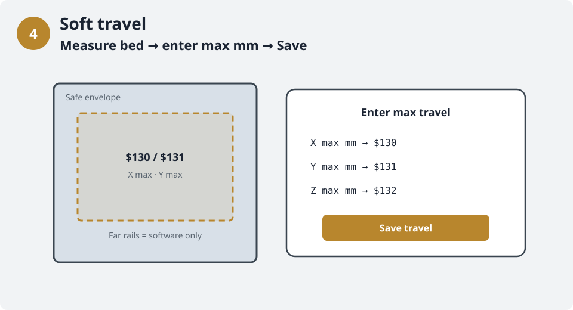
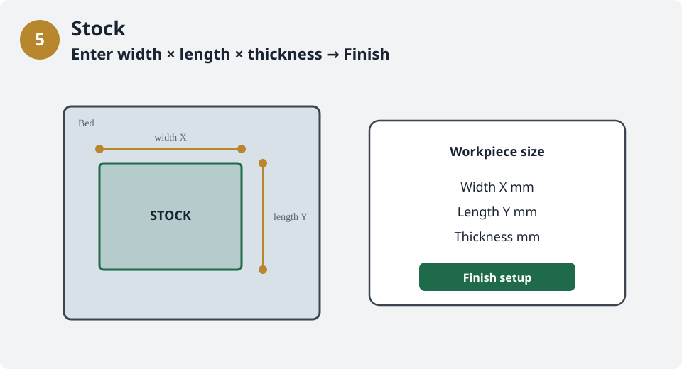

SharpCNC · First run
First-run setup
Same steps as the in-app wizard. One glance = next action.


Detail: Calibration visual guide
Next: Travel →

SharpCNC · First run
Same steps as the in-app wizard. One glance = next action.
Detail: Calibration visual guide
Next: Travel →
